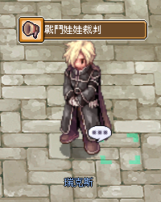

Kampfpuppen-System (戰鬥娃娃)
Täglich Belohnungen abholen, ohne die Puppen zu verbrauchen — das Zero-exklusive Doll-System für Daily-Rewards aus Monster-Drops.
🎎 Was ist das Kampfpuppen-System?
In der Welt von Ragnarok Zero existieren Puppen mit bösartiger Aura, die du durch das Besiegen bestimmter Monster erhältst. Mit diesen Puppen kannst du einmal pro Tag pro Charakter bei einem NPC in Prontera eine großzügige Belohnung abholen — und die Puppen werden dabei nicht verbraucht.
📍 NPC & Standort
Kampfpuppen-Richter Rex (戰鬥娃娃裁判 瑞克斯)
Position: prontera 260 268
Funktion: Täglicher Belohnungs-NPC. Pro Tag kannst du nur eine Kampfpuppen-Art zum Reward einreichen.
Puppen-Eigenschaften
- Lagerbar — kann in der Storage gelagert werden
- Nicht handelbar — bleibt am Account gebunden
- Nicht verbrauchbar — bleibt nach Reward-Abholung im Inventar
- Mehr Kopien derselben Puppe → höhere Belohnungs-Stufe
🔀 Zwei Kategorien
🟢 Reguläre Kampfpuppen (一般戰鬥娃娃)
Drops von normalen Monstern über die ganze Welt verteilt. Niedrigere Reward-Tiers, aber leichter zu farmen.
Liste auf der offiziellen Seite: 一般戰鬥娃娃獎勵清單 (30 Puppen, Stand 23.01.2026).
🟣 MVP-Kampfpuppen (MVP戰鬥娃娃)
Drops von MVP-Bossen. Deutlich bessere Rewards, aber entsprechend rar — siehe auch MVP-System.
Liste: MVP戰鬥娃娃獎勵清單 (34 Puppen, Stand 23.01.2026).
📸 Original-Screenshots

📋 NPC-Dialogfenster — Deutsch aufklappen
Ein Screenshot eines NPCs namens Rex im Spiel Ragnarok Zero, der ein Nachrichtenfeld mit dem Titel 'Battle Doll Judgment' anzeigt.
- Titel: Battle Doll Judgment
- NPC-Name: Rex
Die im Spiel angezeigte Meldung '戰鬥娃娃裁判' wurde als 'Battle Doll Judgment' übersetzt.
💡 Praxis-Tipp
- Täglicher Reset: Plane ein Daily-Run bei Rex als Teil deiner Routine ein — es kostet nichts außer Zeit
- Puppen-Stack aufbauen: Je mehr Kopien, desto besser der Tier — lohnt sich langfristig
- Fokus auf MVP-Puppen: Wenn du aktiv MVPs läufst, sammle gezielt MVP-Puppen für die Top-Rewards
- Kein Verlust bei Claim: Anders als übliche Daily-Systems verschwindet die Puppe nicht nach Einreichen